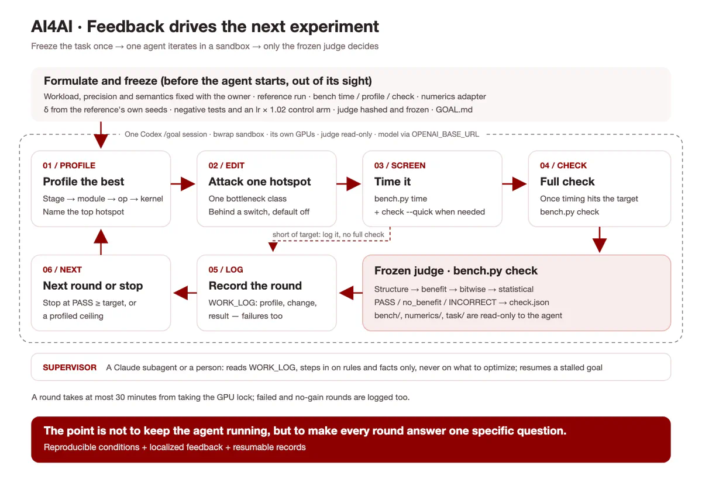

5.32×speedup
Detail Relative speed
Baseline1×
RBA5.32×
Own baseline = 1× · Higher is faster
An open research initiative
AI accelerates the research
that advances AI.
Better research starts with better tools. We build AI agents that profile, optimize, and verify the systems behind the next generation of AI.
ResearchBoost also offers a concrete starting point for studying recursive self-improvement (RSI): long-horizon, technically demanding tasks with relatively clear feedback, spanning system-level architecture and low-level GPU kernels.
01 / The premise
AI research depends on the infrastructure beneath it. Improving that infrastructure gives researchers more room to experiment—and gives AI agents a concrete environment in which to improve.
The challenge spans architecture, execution, and individual kernels. Progress requires sustained reasoning across many experiments, while feedback from correctness, speed, and training quality keeps each step grounded.
For us, this is a practical starting point for exploring RSI: learning how AI can improve the tools and workflows that advance AI research.
Explore the ResearchBoost agent02 / Research in practice
An expanding collection of real research workloads. Each result has its own hardware, timing boundary, and correctness checks.
Project results · Source-reported measurements, not a cross-hardware ranking.
Relative speed
Own baseline = 1× · Higher is faster
Relative speed
Own baseline = 1× · Higher is faster
Relative speed
Own baseline = 1× · Higher is faster
Relative speed
Own baseline = 1× · Higher is faster
Each chart is normalized to its own project baseline (1×). Bar lengths are not comparable across projects. Each result uses its own evaluation setup; see the linked repositories for details.
03 / The working method

04 / Wishing List
Bring a research workload. Tell us what slows you down, what hardware you can provide, and what a useful improvement would look like.
We select cases based on available resources and a clear, reproducible evaluation. A submission starts a conversation; it does not reserve compute.
ydove1031@gmail.com ↗05 / Mini Bench Leaderboard
Three task packages are implemented. The target protocol is 4 × H100 80GB · 4-hour agent budget · correctness-gated speedup. This protocol has not yet been validated on H100; comparable rankings have not been published.
| Agent | Model | DMD2 | LLaVA | RAE | Overall |
|---|---|---|---|---|---|
| Rankings pending H100 validationResults will appear after comparable runs pass the fixed task judges. | |||||
Source-reported speedups belong to individual workloads and hardware configurations. They are not model-agent rankings and are not sorted into a cross-hardware leaderboard.
Browse the project results ↑06 / An open invitation
Build an agent. Bring a workload.
Question a result. Share what you learn.
There is more than one way to move research forward.